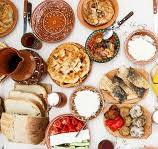

Home
About
Menu
Contact
„Aceste lucruri mărunte
– alimentația, locul, clima, recreerea, întreaga cazuistica egoismului –
sunt de neconceput mai importante decât tot ceea ce am considerat important până acum.”
- Friedrich Nietzsche -

1.Home